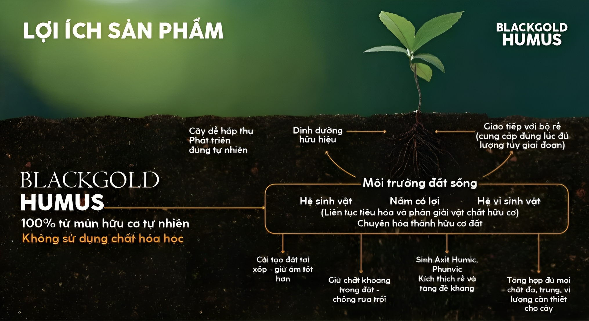

Hướng dẫn sử dụng
Lợi ích sản phẩm
Black Gold Humus tái tạo lại hoàn hảo môi trường đất giúp cây có thể hấp thụ theo đúng tự nhiên như đã nói ở trên
1
Siêu dinh dưỡng:
Cung cấp đầy đủ các loại chất đa, trung, vi lượng từ mùn hữu cơ là phương thức phát triển hoàn hảo của tự nhiên.
2
Chuẩn organic:
Được chế biến từ 100% mùn hữu cơ và đạm gốc động vật hoàn toàn không sử dụng chất hoá học.
3
Cung cấp môi trường hoàn hảo cho cây:
Cải thiện đất tơi xốp và tái tạo môi trường đất sống tự nhiên cùng hệ vi sinh phong phú. Giúp cây tổng hợp và hấp thu dinh dưỡng tốt hơn, tăng cường miễn dịch, giữ nước và các chất khoáng tốt hơn.
4
An toàn:
Sạch, mùi thơm, không vi khuẩn, mầm bệnh hại cho người và cây, sản phẩm được tiệt trùng sơ giai trong quá trình sản xuất.
5
Thân thiện:
Sử dụng cực kì đơn giản dễ dàng, vòng đời cây không cần trộn thêm phân, đất, hay sản phẩm khác trong quá trình sử dụng. Sử dụng đa dạng cho mọi loại cây. .
Các kênh liên hệ
 Facebook
Facebook
Facebook là nơi để cập nhật các ưu đãi mới về sản phẩm
Bấm vào đây để chuyển hướng sang Facebook Zalo
Zalo